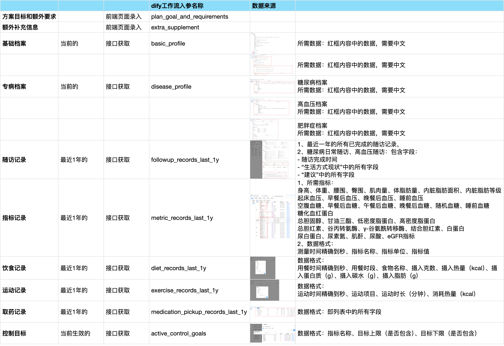
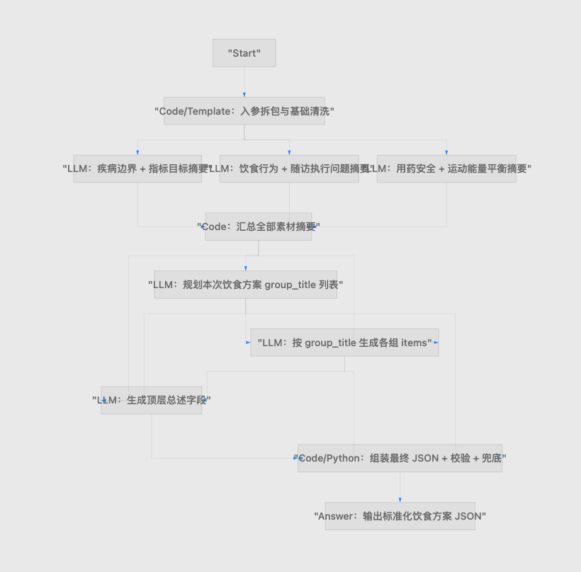

丨深度分析设置
基础档案
近1年随访记录
近1年指标记录
近1年饮食记录
近1年运动记录
近1年取药记录
当前生效中的干预方案
专病档案
方案目标和额外要求
简述您的分析要求，便于大模型更好的理解方案目标和您的需求

0/2000
额外补充信息
填写您希望深度分析时可供大模型参考的额外信息
0/2000
引用档案信息
入参字段：【腾讯文档】【AI健康处方】指标和工作流登记
https://docs.qq.com/sheet/DTnVQd1BsU25USmds?tab=BB08J2

工作流内部
出参格式：
字段名：diet-plan
类型：string
包含内容如下：
dify应用信息：生成饮食方案
应用编码：AI_diet_plan
{
"plan_name": "健康干预方案",
"plan_title": "个性化健康管理建议",
"plan_summary": "方案概述",
"execution_points": "执行要点",
"groups": [
{
"group_title": "条目标题1",
"items": [
{
"content": "具体建议/目标/执行方式",
"focus_point": "解释说明、注意事项、依据",
"importance": "重点执行"
},
{
"content": "具体建议/目标/执行方式",
"focus_point": "解释说明、注意事项、依据",
"importance": "常规建议"
}
]
},
{
"group_title": "条目标题2",
"items": [
{
"content": "具体建议/目标/执行方式",
"focus_point": "解释说明、注意事项、依据",
"importance": "补充建议"
}
]
}
]
}
字段和页面对应关系：
plan_name 患者端方案角标
plan_title 方案患者端展示标题
plan_summary 对应上面的方案概述
execution_points 对应执行要点
groups[] 对应下面一组一组可增删复制的条目组
group_title 对应每组的条目标题
items[] 对应该组里面多条内容明细
content 对应内容
focus_point 对应关注点
importance 对应重要程度，枚举就用：重点执行 / 常规建议 / 补充建议
此块内容需要实现
（通过api或者mcp）
